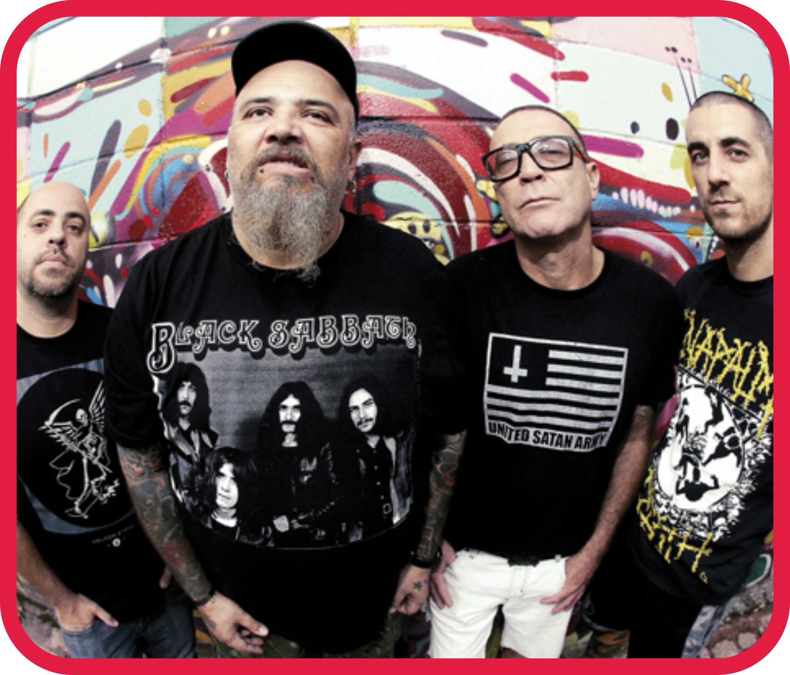
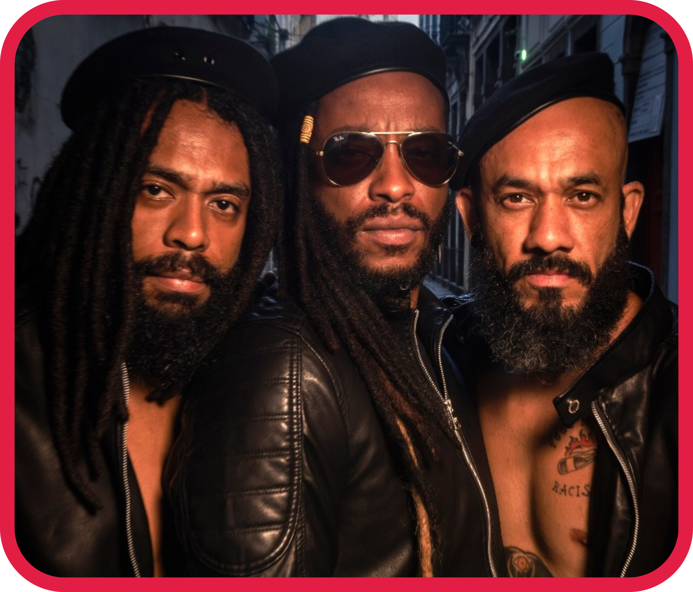

► Conheça algumas bandas brasileiras:

Ratos de Porão é uma banda brasileira de punk rock e crossover thrash formada em novembro de 1981, durante a explosão do movimento punk paulista. Com mais de 40 anos de carreira, são referência brasileira do gênero e reconhecidos internacionalmente, em particular, na Europa, América Latina e América do Norte.
Celulites é uma banda feminina de punk rock autoral, com letras politicamente engajadas em questões sociais voltadas à política, anti misoginia e empoderamento feminino. O intuito da formação do grupo foi trazer a discussão desses temas para a sociedade, visto que é algo que as integrantes vivenciam diariamente.

Black Pantera é uma banda brasileira de crossover thrash formada em Uberaba, em 2014. É composta por Charles Gama, Chaene da Gama e Rodrigo "Pancho" Augusto. Todos são negros e a banda aborda temas como política, racismo e discriminação em geral em suas letras. O nome da banda é uma homenagem aos Panteras Negras.
Fernando Ameba é músico e compositor com mais de vinte anos de trajetória na cena musical. Reconhecido por seu trabalho em bandas de punk rock e influenciado por outros estilos musicais, ele leva para a carreira solo composições que abordam o cotidiano. O projeto nasce do desejo de explorar novas sonoridades e dar vida a músicas que ainda não haviam encontrado espaço para sair do papel.